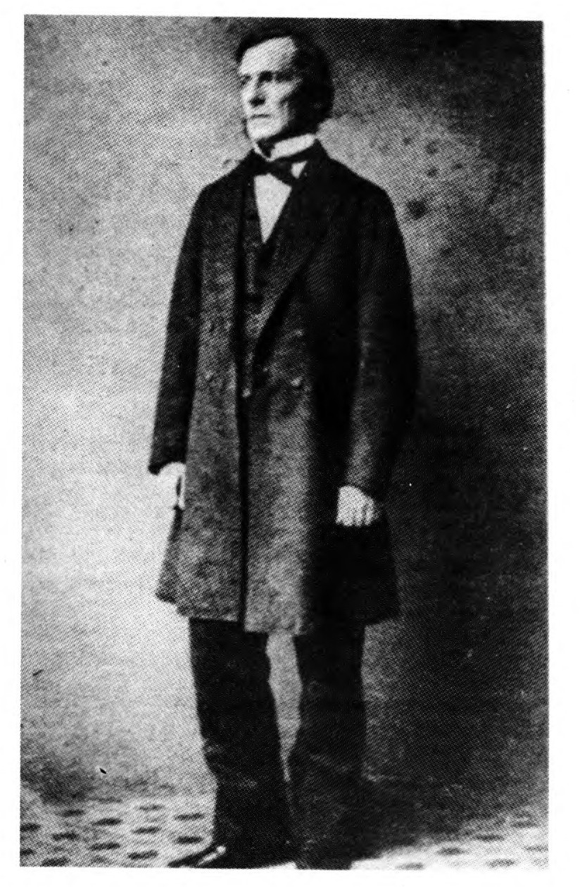
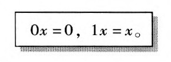
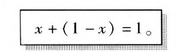
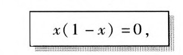
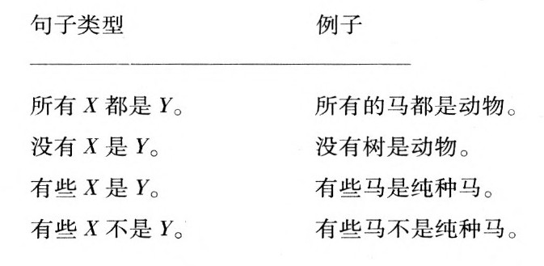
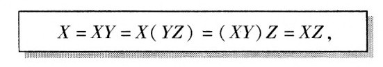
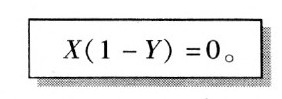
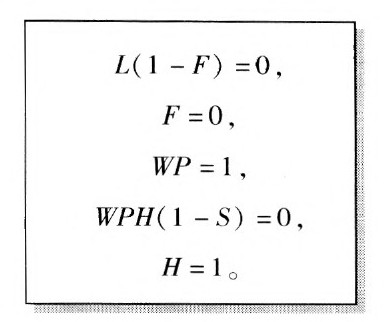
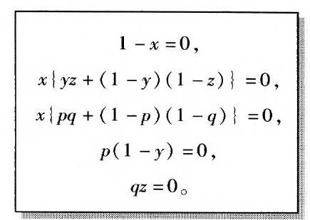

美丽而聪慧的卡洛琳娜·冯·安斯巴赫公主日后将会成为英国王后，即乔治二世之妻。1704年，当她18岁时，她在柏林见到了莱布尼茨。在她随同王室前往英国之后，他们仍然借助通信保持着友谊。她试图说服自己的公公——英王乔治一世——把莱布尼茨带到英国，但正如我们已经知道的，国王坚持让莱布尼茨呆在德国完成汉诺威家族史。
卡洛琳娜发现自己被卷入了莱布尼茨与牛顿及其支持者之间的没完没了的愚蠢争论之中，双方都指控对方在微积分的发明上进行了剽窃。她试图使莱布尼茨相信这件事情没有那么重要，但他却不这样认为。事实上，莱布尼茨希望能被任命为英国的史料编纂者，从而与牛顿担任的造币厂厂长一职相当，而且声称只有这样，与英国相比，德国对抗英国的荣耀才能被保持下来。为此，他曾在国王面前寻求过她的帮助。莱布尼茨给卡洛琳娜写信说，当牛顿声称一颗沙粒能够对遥远的太阳施加一种引力，而无需任何传播这种力的手段时，他实际上是在诉诸神秘的方法来解释一种自然现象，这是无论如何不能接受的。卡洛琳娜则把莱布尼茨的一些著作译成了英文。这一努力使她开始与塞缪尔·克拉克进行接触，有人曾向她举荐后者担当译者。
克拉克是一个哲学家和神学家，也是牛顿的一个忠心耿耿的学生。在其《上帝的存在与属性》（Being and Attributes of God）（1704）一书中，克拉克提出了一种对上帝存在的证明。卡洛琳娜给他看了一封莱布尼茨攻击牛顿观点的信，并要求他作出回复。这使两人之间开始了长时间的通信，直到莱布尼茨去世前几天为止。毫不奇怪，这两颗心灵之间没有共通之处。从我们故事的角度看，关于塞缪尔·克拉克的最有趣的事情是，在莱布尼茨去世几乎一个半世纪之后，乔治·布尔将把克拉克对上帝存在的证明作为一个例子，来论证他本人方法的有效性。事实上，通过这些方法，布尔成功地使莱布尼茨的部分梦想焕发了生机，克拉克的复杂演绎可以被归结为一套简单的方程。1
从莱布尼茨与17世纪的欧洲贵族阶层的世界到乔治·布尔的世界，我们不仅把时间推进了两个世纪，而且还把社会阶层降低了几级。1815年11月2日，乔治出生于英国东部的林肯镇，是四个孩子中的老大。他的父母约翰·布尔和玛丽·布尔在结婚的头9年中一直没有孩子。约翰·布尔是一个补鞋匠，他靠这点生意勉强维持着生活，但却对知识特别是科学仪器有着极大的兴趣。在他的商店橱窗里，他自豪地展出了一架他亲手制作的望远镜。不幸的是，他对生意并不在行，于是支撑整个家庭的重担很快便落在了他那才华横溢的尽职尽责的儿子肩上。2
1830年6月，林肯镇的公民目睹了一场无聊的争论。这场争论是在当地的一家报纸上展开的，争论的话题是古希腊作家梅利埃格的一首诗作的英译文的原创性。这篇译文曾作为“林肯14岁的G.B.”的作品刊登在《林肯报》（Lincoln Her-ald）上，后来P.W.B.撰文指控G.B.剽窃。P.W.B.承认他无法提供G.B.抄袭的出处，他只是认为这样一篇作品竟会出自一个14岁的孩子之手是不可思议的。这场论战使G.B.和P.W.B.之间来往过几封书信，它们都被原封不动地刊登在《林肯使者》上。
乔治·布尔的家庭早就发现了他的能力，却没有钱让他接受正规的教育。于是，在父亲的帮助下，乔治主要依靠自学成才。布尔不仅学习了拉丁语和希腊语，学习了法语和德语，而且还能（当然是很久以后）用这些语言写出数学研究论文。他从未信仰过任何教派，他发现自己不可能信仰基督的神性，但他在整个一生中却秉持着强烈的宗教信念。他不久就抛弃了自己早先成为英国圣公会牧师的念头，这固然是由于他的信仰，但更重要的是因为当父亲的生意破产之后，他的家庭需要直接的经济来源。当乔治在离家40英里以外的一所循道宗小学当一名教师时，他还不满16岁。两年之后他被解雇了，这显然是因为他的不敬神的行为受到了责难：他星期天研究数学，甚至在做礼拜时也是如此！其实，正是在这个时候，布尔才开始越来越转向数学。后来，他在回忆早年的这段生活时解释说，由于买书的钱非常有限，他发现数学书提供了最好的机会，因为看完它们要比看完其他书花费更长的时间。他还喜欢谈及自己在循道宗学校期间突然降临到身上的灵感，这一体验曾被一位传记作家比作保罗走向大马士革的道路，它只有在许多年之后才会结出硕果。3

离开循道宗学校之后，布尔在利物浦找到了一个职位。但在那里教了6个月课之后，他就感到不得不离开了，这可能是因为学校的校长下了逐客令，因为（用他妹妹的话说）他“无所顾忌地沉溺于自己强烈的欲望和激情当中”。4他的下一份工作持续的时间也不长。19岁那年，乔治·布尔决定在他的家乡林肯创办他自己的学校，以使他的家庭得到稳定的经济来源。15年来，布尔一直都成功地担任着校长一职，直到接受了爱尔兰的科克（Cork）城新成立的一所大学的教授职位为止。他的学校（接连有三所）是他的父母和兄弟姐妹唯一的经济支柱，尽管这还需依赖于他的妹妹玛丽·安和弟弟威廉后来的帮助。
虽然经营一所走读的寄宿学校并且讲无数的课程很可能需要整日操劳，但布尔正是在这个时期从一个数学学生转变成了一位富有创造力的数学家。此外，不知怎地，他还抽出一些时间进行社会改良活动。他是林肯镇一个女忏悔者之家的创办人和托管人，其目的是“为在美德的道路上失足的女性提供一个暂时的收容所，通过道德和宗教教育，使她们养成勤勉的习惯，从而赢得社会的尊重”。布尔的传记作家说，这个机构所要帮助的女忏悔者指的就是妓女（维多利亚时期的林肯有许多）。5其实更有可能的情况是，这里的顾客通常是一个年轻的女仆，她发现自己怀孕了，同时又被与她处于同一社会阶层的情人在许诺了婚约之后抛弃。10从乔治·布尔的两篇关于非数学主题的讲演中，我们也许可以对他关于性问题的态度略知一二。在一篇有关教育的讲演中，他警告说：
在一篇有关适当利用闲暇的讲演中[在“林肯提早打烊协会”（Lincoln Early Closing Association）胜利赢得10小时工作日之后所作]，布尔严厉地说：
同父亲一样，布尔也与林肯的技工学院有着不解之缘。这些技工学院主要致力于对工匠和其他工人进行业余教育，它们曾在维多利亚时期如雨后春笋般遍及英国全境。布尔在林肯的一家技工学院做一些委员会工作，他的责任是为改善图书馆提供建议、作讲演以及无偿教授许多课程。
然而不知为什么，在做所有这些事情的同时，他还抽出时间研究了英国和大陆的一些最重要的数学文献，并且开始做出自己的贡献。布尔的许多早期工作见证了莱布尼茨对恰当的数学符号系统的力量的信念，符号似乎无需什么帮助就能奇迹般地产生出问题的正确答案，为此莱布尼茨曾举过代数的例子。在英国，当布尔开始自己的工作时，人们已经渐渐认识到代数的力量来自于这样一个事实，即代表着量和运算的符号服从不多的几条基本规则或定律。这就暗示着，同样的力量也可适用于形形色色的对象和运算，只要它们也服从某些同样的定律。8
在布尔的早期著作中，他把代数方法应用于那些被数学家称为算子的对象上。它们对普通代数的表达式进行“运算”，以形成新的表达式。布尔对微分算子特别感兴趣，之所以有这样的称呼，是因为它们包含着前一章所提到的微积分的微分运算。9这些算子被认为具有特殊的重要性，因为物理世界中的许多基本定律都具有微分方程（即包含微分算子）的形式。布尔说明了某些微分方程如何可能通过把普通代数方法应用于微分算子而得到解决。今天，工程和科学专业的学生通常在大学二年级或三年级的微分方程课上学习这些方法。
在担任校长期间，布尔在《剑桥数学杂志》（Cambridge Mathematical Journal）上发表了不少研究论文。此外，他还提交了一篇很长的论文给《皇家学会哲学会刊》（Philosophical Transactions of the Royal Society）。起初，皇家学会不愿考虑这样一个外行所提交的文章，但他们最终还是接受了它，并且授予它金质奖章。10布尔的方法是引入一种技巧，然后把它应用于若干实例。与那些得到解决的例子一样，他通常并不要求证明他的方法是正确的。11
就在这个时候，布尔开始与几位顶尖的英国年轻数学家进行通信并且发展了友谊。事实上，正是苏格兰哲学家威廉·汉密尔顿爵士与布尔的朋友奥古斯都·德摩根之间的一场争论，才把布尔的思想带回到了他很久以前的那次灵光闪现，即逻辑关系也许可以表示成一种代数。尽管汉密尔顿在形而上学方面学识很渊博，但他似乎有点像一个热衷于争吵的愚人。他发表文章对数学作为一门学科进行攻击，这只可能是由于他对这门学科甚为无知造成的。事情的导火索是德摩根发表的一篇关于逻辑学的文章，汉密尔顿声称它剽窃了他本人在逻辑学上的伟大发现，即他所说的“谓词的量化”。我们无须花费时间来理解这一思想或它所引发的激烈争论——它之所以重要，仅仅是因为它激励了乔治·布尔。12
曾令年轻的莱布尼茨如此着迷的亚里士多德的古典逻辑包括这样一些句子，如：
1.所有的植物都是有生命的。
2.没有河马是聪明的。
3.有些人说英语。
布尔逐渐认识到，在逻辑推理中，像“有生命的”、“河马”或“人”这样一些词的重要之处在于它所描述的所有个体的类（class）或群体（collection）：有生命事物的类、河马的类、人的类。不仅如此，他还认识到这种类型的推理可以用一种关于这些类的代数来表达。布尔用字母来表示类，就像字母以前曾被用来表示数或算子一样。如果字母χ和y表示两种特定的类，那么布尔就说，xy表示既在χ中又在y中的事物的类。正如布尔本人所说的：
在某种意义上，布尔认为这种类的运算类似于数的乘法运算。然而，他发现了一个重要区别：如果y仍然表示绵羊的类，那么yy表示的是什么呢？它必定表示既是绵羊，又是……绵羊的事物的类。但这与绵羊的类是一样的，所以yy=y。如果认为布尔把他的整个逻辑体系都基于如下事实，即当x表示一个类时，方程xx=x总是为真，那么这样说并不过分。我们以后还会回到这一点上来。11
当乔治·布尔的第一部关于逻辑作为数学的一种形式的革命性专著出版时，他的年龄是32岁。他的阐释更为完善的著作《思维的法则》（The Lawy of Thought）出现在7年以后。在布尔的一生中，这段时间是多事之秋。布尔的社会阶层以及不合常规的教育显然使他丧失了在一所英国大学任职的机会。但奇怪的是，正是爱尔兰“问题”给了布尔一个机遇。爱尔兰对英国的许多规定都甚为不满，其中有一项就是他们唯一的一所大学——位于都柏林的三一学院具有清教特色。作为答复，英国政府提议在科克、贝尔法斯特和戈尔韦新建三所大学，称为皇后学院，它们将不受宗教派别限制。尽管受到了爱尔兰政治和宗教知名人士的斥责，因为他们要求建立一所具有绝对的天主教特色的机构，但计划还是向前推进了。布尔决定向这些大学当中的一所申请职位，3年以后，他终于在1849年被任命为科克皇后学院的数学教授。
1849年前后，爱尔兰遭遇了一场由马铃薯晚疫病（一种极具破坏力的真菌疾病，它摧毁了爱尔兰的穷人们赖以生存的马铃薯作物）引起的极为严重的饥荒和病害。许多没有饿死的人也因免疫系统虚弱而被伤寒、痢疾、霍乱和回归热等传染病夺去了生命。英国的统治者很晚才认识到真菌才是这场灾难背后的真正原因，他们反倒指责这是爱尔兰人所谓的好逸恶劳所致。这种社会分析被用来证明从爱尔兰源源不断地出口食物是正当的，而与此同时，数百万人则没有东西吃或被活活饿死。1845年至1852年间，在800万爱尔兰人中，至少有100万人丧命，另外150万人逃往国外。14
布尔对此几乎没有什么话可说，他强烈的愤慨集中在对动物的残忍上。事实上，他对爱尔兰人的态度非常暧昧，正如布尔在科克的皇后学院举行落成典礼时所写的一首十四行诗中所说：
尽管科克不是主要的知识或文化中心，但这一职位却使布尔过上了一种能够与他作为这个世纪伟大数学家的身份相适应的生活。他的父亲刚刚过世，在为母亲提供适当的必需品之后，他终于可以卸下养家糊口的重担，而考虑过一种个人生活了。对于一所大学来说，在科克的学院里所教授的数学的水平是相当低的。课程提纲以“分数和小数算术”开始，接下来是今天在中学里讲授的那些内容。布尔的年薪是250英镑，每学期还可以从每个学生那里收取2英镑的学费。由于他没有助手，所以他每周要批改他所布置的全部家庭作业。
关于皇后学院的争论仍在继续。虽然科克的校长是著名的天主教科学家罗伯特·凯恩爵士，但天主教显然未被充分地凸显出来：在21个学术成员中，只有他和另一个人是天主教徒。事实上，天主教会的统治集团甚至禁止牧师成员参与学院的工作。有些人感到，爱尔兰的职位候选人有时会被有意地忽略，从而为那些相对平庸的英格兰人或苏格兰人创造机会。凯恩校长也不受他的教员们爱戴。由于他的妻子不希望在科克生活，所以这位校长试图从都柏林控制这个学院，加之他的独断专行，这些因素最终酿成了校长与全体教员之间的一场直接斗争，布尔时常被卷入这些毫无结果的斗争当中。16
玛丽·埃佛勒斯是布尔未来的妻子，她后来就一些科克居民对她未来丈夫的态度描述了自己的初步印象。当被问及“这位数学教授怎么样”时，一位女士的回答是，“哦，他是那种你可以放心地把女儿托付给他的人”。还有另一位女士，当她向埃佛勒斯小姐解释自己的孩子为什么不在身边时，她说乔治·布尔带他们散步去了，并且说当他和这些孩子在一起时她自己总是很快乐。对于似乎每个人都很喜欢布尔这样一种回答，那位女士提出了异议：
玛丽·埃佛勒斯是一个性情古怪的牧师的女儿，中校乔治·埃佛勒斯爵士12的侄女。她也是布尔的朋友和同事约翰·瑞奥的外甥女，后者是科克皇后学院的副校长和希腊语教授，乔治和玛丽就是他介绍认识的。玛丽从小就表现出了数学上的聪慧。在乔治开始辅导她之后，他们成了好朋友，并且频繁地通信。布尔似乎相信，他们在年龄上相差的17岁可以排除事情进一步发展的任何可能。但在他们第一次会面5年之后，随着玛丽父亲的过世，事情到了该了结的时候了。由于玛丽在经济上难以为继，乔治立即提出求婚。就在这一年，他们结了婚。
他们的婚姻仅仅持续了9年，因为布尔在49岁时就去世了。此前，布尔曾于寒冷的10月在一场暴风雨中步行了3公里去上课。随后患上的支气管炎不久就发展成了肺炎，两个星期之后，他离开了人世。颇具悲剧色彩的是，他妻子对医学的古怪看法可能加速了他的死亡——她似乎用湿冷的床单包裹他来治疗他的肺炎。18
显然，这场婚姻是非常幸福的。19玛丽·布尔回忆说，它“就像一场温暖和煦的梦”。布尔的遗孀一直活到20世纪，享年84岁，其时第一次世界大战的战火烧到了海峡对岸。她变得越来越沉迷于各种神秘信仰当中，而且还写了大量不知所云的文字。他们的五个女儿的生活都很有意思。三女儿艾丽西娅的几何能力非常出众，她能够十分清楚地想象四维的几何对象，这使她能够做出一些重要的数学发现。不过，最令人惊讶的还是小女儿埃塞尔·莉莲。当父亲去世时她还只有6岁，她记得自己的童年是在极度贫困中度过的。莉莉（她的昵称）进入了19世纪末生活在伦敦的俄国革命流亡者的圈子里。在一次前往俄国（那时包含了波兰的大部分地方）帮助她那些革命战友的途中，当她凝视华沙的堡垒时，她未来的丈夫威尔弗雷德·伏尼契从牢房中看到了她。数年之后，伏尼契在逃到伦敦时认出了她。这一浪漫的开端促成了他们的婚姻。
莉莉后来以写作《牛虻》（The Gadfly）一书而闻名，这部小说的灵感得自她与一个名叫西德尼·赖利的人之间发生的短暂而热烈的爱情，他不可思议的一生成就了一部名为《赖利：间谍好手》（Riley：Ace of Spies）的电视连续短剧。极具讽刺意味的是，赖利这位强烈反对共产主义的人被布尔什维克在俄国处死，而他的情人的这部真实灵感不为人所知的小说却成了俄国学童的必读书。1955年，《真理报》告诉莫斯科的读者，《牛虻》的作者还活着，现在纽约生活，她收到了从苏联寄来的一张15000美元的特许支票。5年后，她以96岁的高龄去世。20
回到布尔应用于逻辑的新代数。我们还记得，如果χ和y表示两个类，则布尔将用xy表示那些既属于x又属于y的东西的类，他用这个记号是要暗示与普通代数中的乘法的类比。用现在的术语来说，xy被称为x和y的交集。21我们还看到，当x表示一个类时，方程xx=x总是为真。这使布尔提出了一个问题：在χ表示一个数的普通代数中，什么时候方程xx=x为真？答案很显然：仅当x为0或1时方程才为真。于是布尔得出了一条原理：如果只限于0和1两个值，那么逻辑代数就成了普通代数。然而，要说明这一点，就必须把符号O和1解释成类。0和1在普通乘法中的运算分别为此提供了线索：0乘以任何数都等于0；1乘以任何数都等于那个数。用符号来表示就是：

对于类而言，如果我们把0解释成一个没有任何东西属于它的类，那么对于任何χ，Ox都将等于0；用现代的术语来说，O为空集。类似地，如果1包含我们所考虑的每一个对象，那么对于任何χ，1x都将等于χ，或者说，1是我们所要言说的全体。
普通代数处理的是加减法和乘法。如果布尔要把逻辑代数解释为遵守特殊规则xx=x的普通代数，那么他就需要对+和一作出解释。如果x和y表示两个类，布尔就用x+y来表示或者在χ中，或者在y中的所有事物的类，今天它被称为χ和y的并集。布尔本人的例子是，如果χ表示男人的类，y表示女人的类，则x+y就是由所有男人和女人所组成的类。布尔还用x-y表示在χ中但不在y中的事物的类。22如果χ表示所有人的类，y表示所有孩子的类，那么x-y就表示所有成年人的类。特别地，1-x将表示不在χ中的事物的类，从而

让我们看看布尔的代数是如何工作的。我们用普通代数的记号把xx记作z2。于是布尔的基本规则可以写成x2=x或x-x2=0。根据通常的代数规则把这个方程因式分解，得到

用语言来描述就是：没有任何东西可以既属于又不属于一个给定的类χ。对布尔来说，这是一个令人振奋的结果，因为这使他确信自己的路走对了。正如他引用亚里士多德的《形而上学》中的话所说，这个方程精确地表达了……曾被亚里士多德说成是一切哲学的基本公理的“矛盾律”。“同一种性质既属于又不属于同一个东西，这是不可能的……这是一切原理中最确定无疑的……因此，那些作论证的人把这当成一条最终的意见。因为它依其本性就是其他一切公理的来源。”23
当布尔引入新的一般观念时，他一定像所有科学家那样很高兴看到它能够获得证实：像亚里士多德的矛盾律这样一个早期的重要里程碑原来只不过是新观念的一个特殊应用而已。事实上，在布尔的时代，研究逻辑的人普遍都把整个学科等同于亚里士多德在许多个世纪以前所做的工作。正如布尔所说，这就等于坚持“逻辑科学不会像所有其他科学那样有不完美之处，也不会像它们那样有所进步。”亚里士多德所研究的那部分逻辑处理的是一种被称为三段论的非常特殊的受限推理。这些推理从一对被称为前提的命题出发，得出另一个被称为结论的命题。前提和结论都必须用下列四种类型之一的句子来表示：

下面是一个有效的三段论的例子：
所有X都是Y
所有Y都是Z
所有X都是Z
说这个三段论是有效的，就意味着无论X、Y、Z被代之以什么样的性质，只要两个前提为真，那么结论也将为真。下面是这个三段论的两个例子：
所有的马都是哺乳动物。
所有怪物都是蛇鲨。
所有哺乳动物都是脊椎动物。
所有蛇鲨都是紫色的。
所有的马都是脊椎动物。
所有怪物都是紫色的。
我们可以很容易地用布尔的代数方法来证明这个三段论是有效的。说X中的每一个东西也属于Y，就等于说没有任何东西是属于X却不属于Y的，也就是说X（1-Y）=0，或者X=XY。类似地，第二个前提可以被写成Y=YZ。利用这些方程我们得到

即为我们所想要得到的结论。24
当然，并不是每一个三段论都是有效的。只要把前面这个例子的第二个前提和它的结论互换一下，我们就得到了一个无效三段论的例子：
所有X都是Y
所有X都是Z
所有Y都是Z
这时就不能用X=XY和X=YZ的前提来得到Y=YZ的结论了。
回想起来，我们很难理解人们竟然普遍相信三段论推理便构成了逻辑的全部。布尔严厉批评了这一观念。他指出，许多日常推理都涉及他所谓的二级命题，即表达其他命题之间关系的命题。这种推理就不是三段论。
举一个这种推理的简单例子。让我们听一下乔和苏珊之间的一场对话。乔找不到他的支票簿了，苏珊正在帮他。
乔看了看，（如果逻辑学对这一天来还适用的话）丢失的支票簿就在那里。让我们看看布尔的代数如何能被用于分析乔和苏珊的推理。
在他们的推理中，乔和苏珊处理的是如下命题（每一个命题都用一个字母来表示）：
L=乔把支票簿忘在了超市。
F=乔的支票簿在超市找到了。
W=乔昨晚在饭馆开了一张支票。
P=昨晚开了支票之后，乔把支票簿放在了他的夹克口袋里。
H=乔从昨晚起就没有再用过他的支票簿。
S=乔的支票簿仍然在他的夹克口袋里。
他们用了如下推理形式：
前提：
如果L，那么F。
非F。
W且P。
如果W且P且H，那么S。
H.
结论：
非L。
S.
就像亚里士多德的三段论一样，这一形式构成了一个有效推理。因为一如任何有效的推理，被称为结论的句子的真可以从其他被称为前提的句子的真推理出来。
布尔发现，适用于类的同一种代数也可适用于这种推理。25他用一个方程，比如说X=1，来表示命题X为真。于是，他会用方程X=O来表示“非X”，而用方程XY=1表示“X且Y”。之所以如此，是因为恰恰当X和Y均为真时，X且Y才为真；而在代数上，如果X=Y=1，则XY=1，但如果X=0或Y=O（或两者都等于0），那么XY=O。
最后，“如果X，那么Y”这一陈述可以用以下方程来表示：

为了理解这一点，把这条陈述当成是在断言
而事实上，把X=1代人这一方程，便可得到1-Y=O，即Y=1。
利用这些思想，乔和苏珊的前提就可以用以下方程来表示：

把第二个方程代入第一个，我们即可得到L=O，即所要得到的第一个结论。把第三个方程和第五个方程代入第四个，我们就得到1-S=0，即所要得到的另一个结论S=1。
当然，乔和苏珊不需要这种代数。但在人类日常交流背后正在不自觉地发生的那种推理，却可以为布尔的代数所把握。于是，更为复杂的推理也是有可能被把握的。也许可以认为数学系统地概括了极为复杂的逻辑推理，所以要想对一种以完备性为目标的逻辑理论进行最终的检验，那么就要看它是否包含了一切数学推理。我们将在下一章回到这个问题。
作为布尔方法的最后一个例子，我们回到这一章开头提到的塞缪尔·克拉克对上帝存在的证明。我们姑且不论克拉克冗长而复杂的演绎，至少看看布尔是怎么做的就很有意思。我们引用一个小片。26
前提是：
第一，某种东西存在。
第二，如果某种东西存在，那么或者某种东西一直存在，或者现存的东西是从无中产生的。
第三，如果某种东西存在，那么它或者是依其自身本性的必然性而存在，或者是凭借另一个存在者的意志而存在。
第四，如果它是依其自身本性的必然性而存在的，那么就有某种东西是一直存在的。
第五，如果它是凭借另一个存在者的意志而存在的，那么现存的东西是从无中产生的假说就为假。
我们现在必须用符号表达上述命题。
设
x=某种东西存在，
y=某种东西一直存在，
z=现存的东西是从无中产生的，
p-它依其自身本性的必然性而存在，
q=它通过另一个存在者的意志而存在。
布尔接着由前提获得了以下方程：

对于这种把复杂的形而上学推理还原成简单方程的运算，我们不知克拉克会作何感想。作为牛顿的一个学生，他也许会高兴。但憎恶数学的形而上学家威廉·汉密尔顿爵士必定会对此惶恐万分。
布尔的逻辑体系不仅包含了亚里士多德的逻辑，而且还远远超过了它。但这距离实现莱布尼茨的梦仍旧非常遥远。考虑下面这个句子：所有失败的学生或是糊涂的或是懒惰的。有人也许会认为这个句子属于的类型。但这就要求糊涂学生或懒惰学生的类被当成一个单元来处理，而不允许有推理对那些由于糊涂而失败的学生和由于懒惰而失败的学生进行区分。在下一章中，我们将会看到戈特洛布·弗雷格的逻辑体系是如何包含这种更为微妙的推理的。
把布尔的代数用作一个计算规则的系统是非常直接的，我们也许可以说，在其界限之内，它提供了莱布尼茨曾经寻求的微积分的推理演算。莱布尼茨关于这些内容的著述是以书信的形式保留下来的，此外还有其他一些未发表的文献。只是到了19世纪末，才有人认真地搜集和出版这些著作，所以布尔是不大可能知道他的前辈的努力的。不过，把布尔成熟的系统与莱布尼茨零碎的尝试比较一下是有趣的。我们在第一章中所引述的莱布尼茨的话把A⊕A=A作为第二条公理，于是，莱布尼茨所考虑的运算就会遵循布尔的基本规则：xx=x。这与现代的做法相一致，它显示在这个方面莱布尼茨曾超前于布尔。
乔治·布尔的伟大成就是一劳永逸地证明了逻辑演绎可以成为数学的一个分支。尽管在亚里士多德的先驱工作之后，逻辑学上曾经有过某些发展（特别是希腊化时期的斯多葛派和12世纪的欧洲经院学者），但布尔却发现这门学科从本质上说仍然是两千年前亚里士多德之后的样子。从布尔开始，数理逻辑就一直处于连续不断的发展之中。13